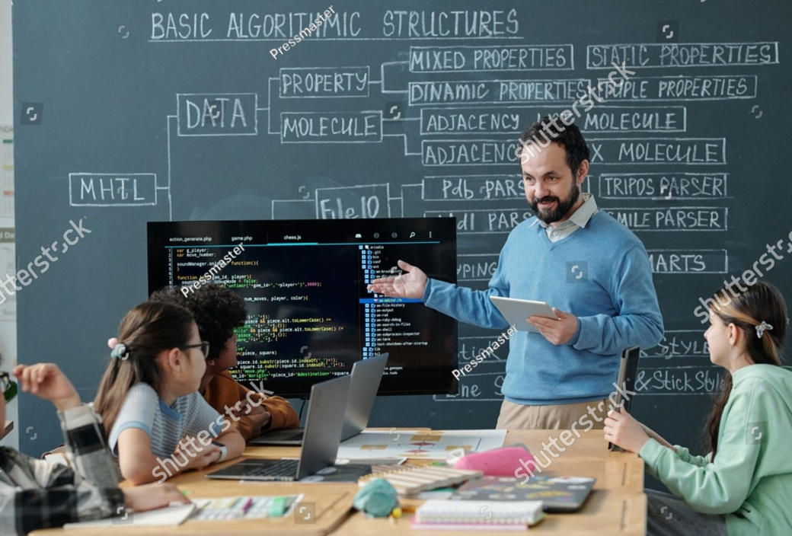

About Me
Frontend Developer | Backend Developer | Tech Advocate
Hello! I'm Fadero Joshua, a passionate developer with experience in building dynamic and responsive web applications. I love coding and am always eager to learn new technologies and improve my skills. In my free time, I enjoy contributing to open-source projects and exploring the latest trends in web development. I also like attending tech meetups, reading about software architecture, and collaborating with other developers on innovative ideas. When I'm not coding, I enjoy hiking, photography, and discovering new music.
What I Do!

Web Development
As a developer, I find myself most captivated by the power and flexibility of NEXT.js. I'm always eager to dive into new projects that leverage NEXT.js and discover innovative ways to create fast, scalable, and user-friendly applications.

Mentorship
I have also found great joy in sharing my knowledge with others. Being a technical mentor allows me to give back to the community that has supported me throughout my career.

Graphic Design
In addition to my development skills, I have a strong background in graphic design. I enjoy creating visually appealing and user-friendly interfaces that enhance the overall user experience.